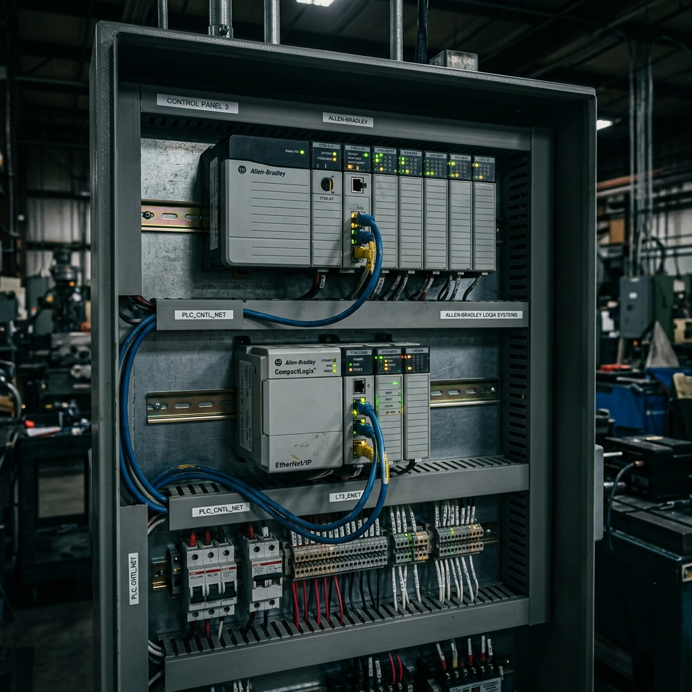

Guía Completa de Familias de PLC Allen-Bradley: De Micro800 a ControlLogix 5580
Publicado por el Equipo de Ingeniería de Robologix Automation | Coahuila, México
Resumen de Ingeniería:
Las familias de controladores Allen-Bradley (Rockwell Automation) dominan el mercado industrial de Norteamérica. Se estructuran en tres niveles principales: Micro800 (para máquinas pequeñas autónomas con Connected Components Workbench), CompactLogix 5380 (para celdas de automatización de tamaño medio/alto con Studio 5000 Logix Designer) y ControlLogix 5580 (para procesos de alta velocidad, movimiento coordinado multieje y redundancia en planta completa).

Controladores modulares Allen-Bradley montados en tablero con redes EtherNet/IP.
1. ControlLogix 5580 (Gama Alta de Planta)
Es el buque insignia de Rockwell Automation. Diseñado en chasis modular de 4, 7, 10 o 13 ranuras, ofrece:
- Puertos Ethernet gigabit integrados en la CPU para comunicaciones ultra rápidas.
- Soporte de hasta 256 ejes de servo movimiento (CIP Motion).
- Módulos de redundancia en tiempo real para evitar paros en industrias críticas (química, automotriz).
2. CompactLogix 5380 (Estándar para Celdas e Integración Robótica)
Ideal para el 80% de las aplicaciones industriales en naves de Saltillo y Ramos Arizpe. Combina el motor de ejecución Logix con un factor de forma compacto montable en riel DIN sin necesidad de chasis físico.
- Programación unificada con Studio 5000 Logix Designer.
- Doble puerto Ethernet configurable en modo Dual IP o DLR (Ring Topology).
- Módulos de I/O de alta densidad serie 5069 Compact I/O.
3. Micro800 (Micro820, Micro850, Micro870)
Solución económica orientada a fabricantes de maquinaria OEM (Standalone Machines). Se programa con el software gratuito CCW (Connected Components Workbench) y soporta protocolos Modbus TCP y EtherNet/IP básico.
Especialistas en Rockwell / Allen-Bradley en Saltillo
Desarrollo de lógica en ladder, estructurada y UDTs optimizadas en Studio 5000 v20 a v35.
Reemplazo directo de chasis 1746 por 5069 POINT I/O sin paros prolongados.
Integración bajo estándares Ford, GM, Stellantis y Tier-1 en Ramos Arizpe y Saltillo.
Artículos Técnicos Relacionados:
¿Requiere Programación o Migración de PLC Allen-Bradley en Coahuila?
En Robologix Automation somos especialistas certificados en programación Studio 5000, RSLogix y diagnósticos en planta.
Hablar con un Especialista Allen-Bradley